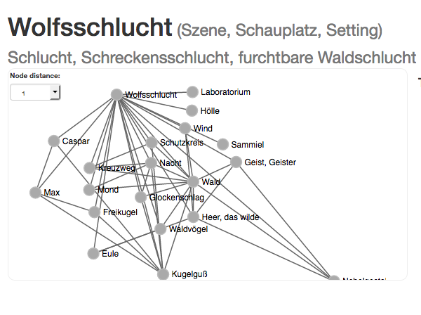
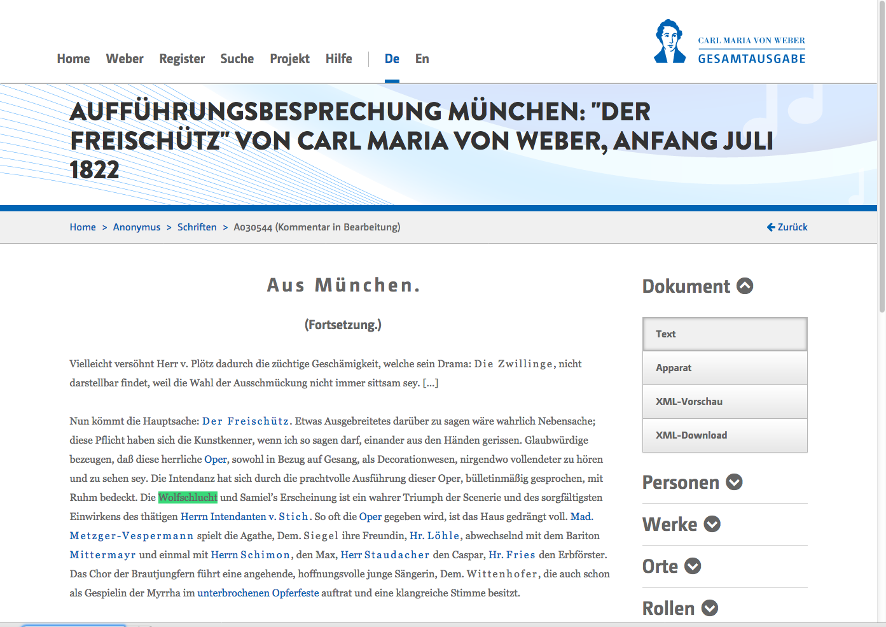
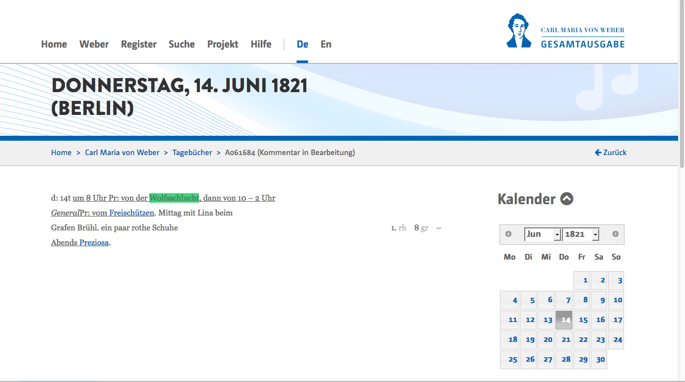

Reference-Text Documentation
Content
1. Intertexts: Libretto Reference Points
1.1 Preliminary Remarks and Selection of Text Sources (References)
The Freischütz story is known not only from Friedrich Kind’s and Carl Maria von Weber’s libretto Der Freischütz. The folk saga about marksmen, their bullets and the casting of these bullets has been repeatedly taken up and dealt with in the literature in different variants since its original version in the Unterredungen von dem Reich der Geister zwischen Andrenio und Pneumatophilo [Conversations from the Spirits’ Realm between Andrenio and Pneumatophilo] printed in 1730.
The gist of the saga plot tells of a man (of an official scribe in earlier variants, of a young hunter in later versions), who, lured by a intermediary and aided by the devil and evil powers, casts rifle bullets late at night and with all sorts of spooks. The Freischütz saga was rapidly expanded by the motif of a guilt-ridden man’s love for a pure virgin, and – in a happy ending – his redemption; it was enriched by various motifs of the fantastic and by folk superstitions and beliefs as well as also other motifs exploiting the popular topoi of gothic and doom romanticism at the end of the 18th century. Recorded as constants in the most diverse of the Freischütz-versions are the following motifs:
- The motifs of the marksman, rifle bullets, and the nocturnal casting of bullets (with the fantastic and phantoms such as the wild army),
- The motif of the compulsory trial shot from time immemorial,
- The motif of the hunter’s setting,
- The plummeting ancestral portrait,
- The dream narrative.
Emerging in the eyes of many recipients, especially in motifs 2–5 in the Freischütz saga, is the “fateful as well as also the ominous of later romanticism.”5
In addition to this “motif constancy” in the texts, “an inventory of stereotypical props and atmospheric design media” reoccurs;6 these features belong among many other things to the recurrent qualities of the 19th-century drama of fate and can also be found in the Freischütz librettos and their reference texts.
In theFreischütz Digital project, therefore, specific characteristic terms or concepts and names are deliberately and selectively taken up and tracked through various texts. Consistency, variation (synonyms, lexical variants, name changes) and thus development of single motifs can in fact be traced down to the word level (names and terms). In this way, a granular view of the motifs can be achieved, that is, to the selected concepts and names ultimately characterizing the motifs in their decisive constellation and their relations to one another.
[Example, “bullet-casting” scene: In the forest solitude in the nocturnal hours by the moonlight, two young huntsmen, with the help of evil spells and powers, personified by a black hunter, cast the fatal bullets for the purpose of helping the one young marksman achieve the successful trial shot. During the casting, the hunters experience a number of ghosts and apparitions. In addition to the bullet-casting act itself, the elements and design media of the bullet-casting or later the Wolfsschlucht [Wolf’s Glen] scene include: forest, night, tolling bells, wild army, owl, raven, circle, hunting knife, hunter, tools for casting the bullets, etc.]
1.2 Selecting the References
In addition to the Freischütz libretti, the Freischütz Digital project also includes examples of other exemplary text sources pertaining to motifs, themes, and dramatic characters closely related to the Freischütz libretto sources mentioned under the selection of text sources; these are, however, paradigmatic for all other (numerous) texts of the later 18th and early 19th centuries, containing one or more of the motifs to be observed here in different variants and adaptations.7
Selected for the project were mainly the texts and subject models with the most frequently occurring motifs mentioned under the
Preliminary Remarks; these best represent the subject history and illustrate how closely Kind’s Freischütz libretto depends on its subject models. (Thus, for example, Friedrich Kind himself refers to the eponymous subject model by August Apel of 1810, described as a folk saga.)8
Furthermore, the Wallenstein drama trilogy, an important historical drama, widely-known and received at the end of the 18th century and hence factored into the destiny-drama context, is to be included in the edition; this is so because in the references there are also numerous allusions to the Wallenstein trilogy – with the parts Wallenstein I, consisting of Wallensteins Lager [camp] and Die Piccolomini, and Wallenstein II, consisting of Wallensteins Tod [death] (written in 1796/99, first print: Tübingen [Cotta], 1800, preceded by several excerpts in journals and almanacs) – , quotations from it, direct and/or only slightly modified, such as are to be found, for example, in the saga, Der Freischütz, of 1812, by Franz Xaver von Caspar. The quotations were correspondingly marked in the encoding of Casper’s Der Freischütz and linked to the relevant Wallenstein text lines.
The Wallenstein trilogy in XML encoding (as per TEI) was already available in the TextGrid Repository; this was used for the edition and the individual characteristic terms and names in it were tracked down and marked up to ensure connection to the Topic Map.
1.3 Overview of the Text Sources (References) and their Sigla
Among the references considered are both manuscript and printed texts (sigla abbreviations – based on the systematic libretti sigla – meaning as follows: R = reference text, Ms = manuscript, D = print and tx = text) of different genres such as libretti, dramas, and prose sharing this common network of concepts/terms and themes and indicating a recurrence of motifs and comparable constellations of persons.
| Year | Title | Author | Signature | Sigla |
|---|---|---|---|---|
| 1729 | Unterredungen von dem Reich der Geister […] | Otto von Graben zum Stein | D-Mbs, Phys.m. 289-1 | RD-tx1 |
| 1792 | Die Geisterinsel | Friedrich Kind | D-Mbs, P.o.germ. 714 c-1 | RD-tx3 |
| 1800 | Wallensteins Lager | Johann Christoph Friedrich von Schiller | textgrid:twxm.0 (Friedrich Schiller: Sämtliche Werke, Auf Grund der Originaldrucke herausgegeben von Gerhard Fricke und Herbert G. Göpfert in Verbindung mit Herbert Stubenrauch, Band 1–5, 3. Auflage, München: Hanser, 1962.) | RD-tx15 |
| 1800 | Die Piccolomini | Johann Christoph Friedrich von Schiller | textgrid:twxm.0 (Friedrich Schiller: Sämtliche Werke, Auf Grund der Originaldrucke herausgegeben von Gerhard Fricke und Herbert G. Göpfert in Verbindung mit Herbert Stubenrauch, Band 1–5, 3. Auflage, München: Hanser, 1962.) | RD-tx16 |
| 1800 | Wallensteins Tod | Johann Christoph Friedrich von Schiller | textgrid:twxm.0 (Friedrich Schiller: Sämtliche Werke, Auf Grund der Originaldrucke herausgegeben von Gerhard Fricke und Herbert G. Göpfert in Verbindung mit Herbert Stubenrauch, Band 1–5, 3. Auflage, München: Hanser, 1962.) | RD-tx17 |
| 1803 | Das Schloß Aklam | Friedrich Kind | A-Wn, Alt Mag 129376-A | RD-tx5 |
| 1805 | Die Bilder der Ahnen | Johann August Apel | D-F, MPQ 110, F. 14087-14088 | RD-tx6 |
| 1811 | Gespensterbuch | Johann August Apel / Friedrich Laun | D-Mbs, P.o. germ. 45-1 | RD-tx7 |
| 1812 | Der Freischütz | Franz Xaver von Caspar | D-Msta, HV-MS 60 | RMs-tx8 |
| 1813 | Der Freischütz | Franz Xaver von Caspar | D-Sl, Cod. Don. 139 | RMs-tx9 |
| 1816 | Der Freischütz oder Die Schreckensnacht am Kreuzwege | Franz de Paula Roser / Joseph Alois Gleich | A-Wtm, Schw 161 | RMs-tx10 |
| 1816 | Der Freischütz oder Die Schreckensnacht am Kreuzwege | Franz de Paula Roser / Joseph Alois Gleich | A-Wtm,-Cth S 32 | RMs-tx11 |
| 1819 | Der schwarzbraune Jäger | W. A. Gerle | D-Mbs, 4° Per.7 pa-1819, 1 | RD-tx12 |
| 1821 | Der Freischütz | Franz Joseph Riesch | D-B, Yp 4803-1821, 1 | RD-tx13 |
| 1824 | Samiel oder die Wunderpille | Franz Joseph Riesch | D-Mbs, Slg. Her 1513 | RD-tx14 |
Encoding and Presenting Text Sources (References)
All text sources (references) were captured in diplomatic transcription, focusing particularly on the formal and structural aspects, and marked according to TEI standards (Text Encoding Initiative; www.tei-c.org/, see Source Encoding and Visualization). The transcriptions are thus based on the methods used in transcribing and encoding Freischütz libretti manuscripts and prints. The guidelines for capturing text sources (references) therefore follow the general edition and encoding guidelines with very few additions and differences; see Guidelines for Editions and Encoding the Text Edition.
The reference encodings and source images are present using the Edirom user interface. Five different views of the texts can be selected in the Edirom source window:
- Metadata (including source description)
- Continuous text (flow text)
- Page-based facsimile
- Page-based text– facsimile juxtaposition
- XML data view
Included among the reference sources (see table) are the texts RD-tx5 (Das Schloß Aklam), RD-tx6 (Die Bilder der Ahnen) and RMs-tx11 (Der Freischütz oder Die Schreckensnacht am Kreuzwege) without visualization and images but only in their XML encoding and prepared and provided for the Topic Map (and incorporated in this form in the TextGrid Repository).
2. Topic Map
Selected and tracked in all texts, based on the Freischütz libretti and its references, were names and concepts/terms and their variants or counterparts; these keywords were marked in the XML encodings of two libretto texts – Weber’s personal exemplar (KA-tx4) and the Kind print (D-tx2) – and in their reference texts ([see table]) and given an identification (ID) referring to an external Topic Map separate from all texts.
Using the standardized XML Topic-Map data format (XTM 2.0; http://www.isotopicmaps.org/sam/sam-xtm/) http://www.isotopicmaps.org/sam/sam-xtm/), the names and terms are systematically captured, categorized, and their relationship to each other as well as also intertextually among the libretto texts and their references comprehensively defined. (For visualizing the Topic Map, see also "The Freischütz Network").
2.1 Building the Freischütz Digital-XTM
Topic
The individual names and terms are captured as so-called topics in the XTM. The topic entry gets an identification (@id), identifies the keyword names, also its variants occurring in the texts, and lists all the references in the relevant texts:
- <instanceOf/> specifies the entry category; multiple assignments (to various categories) are possible. The individual categorizations are again defined as topic entries on their own in XTM (see also further below under Topic Categories)
- Listed under <name/> are both its keyword (<value/>) as well as its variants <variant/> seine Varianten aufgelistet
- Listed under <occurrence/> are all keyword and variant locations and referred to directly are all source locations with an @ref and the topic identifier.
Example of a simple name ("Agathe"):
<topic id="agathe">
<instanceOf>
<topicRef href="#name"/>
<topicRef href="#role"/>
</instanceOf>
<name>
<value>Agathe</value>
<variant>
<scope>
<topicRef href="#sort"/>
</scope>
<resourceData>Agathe</resourceData>
</variant>
</name>
<occurrence>
<type>
<topicRef href="http://www.topicmaps.org/xtm/1.0/core.xtm#occurrence"/>
</type>
<resourceRef href="freidi-referenceSource_RD-tx14.xml#agathe"/>
</occurrence>
<occurrence>
<type>
<topicRef href="http://www.topicmaps.org/xtm/1.0/core.xtm#occurrence"/>
</type>
<resourceRef href="freidi-librettoSource_KA-tx4.xml#agathe"/>
</occurrence>
<occurrence>
<type>
<topicRef href="http://www.topicmaps.org/xtm/1.0/core.xtm#occurrence"/>
</type>
<resourceRef href="freidi-librettoSource_D-tx2.xml#agathe"/>
</occurrence>
</topic>Example of a term (“image”) with variants:
<topic id="bild">
<instanceOf>
<topicRef href="#object-of-use"/>
<topicRef href="#action"/>
</instanceOf>
<name>
<value>Ahnenbild</value>
<variant>
<scope>
<topicRef href="#sort"/>
</scope>
<resourceData>Ahnenbild</resourceData>
</variant>
<variant>
<scope>
<topicRef href="#formation"/>
</scope>
<resourceData>Bild</resourceData>
</variant>
<variant>
<scope>
<topicRef href="#formation"/>
</scope>
<resourceData>herabstürzendes Ahnenbild</resourceData>
</variant>
<variant>
<scope>
<topicRef href="#formation"/>
</scope>
<resourceData>Kuno’s Bild</resourceData>
</variant>
<variant>
<scope>
<topicRef href="#formation"/>
</scope>
<resourceData>Bild eines alten Jägers</resourceData>
</variant>
</name>
<occurrence>
<type>
<topicRef href="http://www.topicmaps.org/xtm/1.0/core.xtm#occurrence"/>
</type>
<resourceRef href="FreiDi_TopicMap_Handbuch.xml#bild"/>
</occurrence>
<occurrence>
<type>
<topicRef href="http://www.topicmaps.org/xtm/1.0/core.xtm#occurrence"/>
</type>
<resourceRef href="freidi-referenceSource_RD-tx7.xml#bild"/>
</occurrence>
<occurrence>
<type>
<topicRef href="http://www.topicmaps.org/xtm/1.0/core.xtm#occurrence"/>
</type>
<resourceRef href="freidi-referenceSource_RMs-tx8.xml#bild"/>
</occurrence>
<occurrence>
<type>
<topicRef href="http://www.topicmaps.org/xtm/1.0/core.xtm#occurrence"/>
</type>
<resourceRef href="freidi-referenceSource_RMs-tx9.xml#bild"/>
</occurrence>
<occurrence>
<type>
<topicRef href="http://www.topicmaps.org/xtm/1.0/core.xtm#occurrence"/>
</type>
<resourceRef href="freidi-referenceSource_RMs-tx10.xml#bild"/>
</occurrence>
<occurrence>
<type>
<topicRef href="http://www.topicmaps.org/xtm/1.0/core.xtm#occurrence"/>
</type>
<resourceRef href="freidi-referenceSource_RMs-tx11.xml#bild"/>
</occurrence>
<occurrence>
<type>
<topicRef href="http://www.topicmaps.org/xtm/1.0/core.xtm#occurrence"/>
</type>
<resourceRef href="freidi-librettoSource_KA-tx4.xml#bild"/>
</occurrence>
<occurrence>
<type>
<topicRef href="http://www.topicmaps.org/xtm/1.0/core.xtm#occurrence"/>
</type>
<resourceRef href="freidi-librettoSource_D-tx2.xml#bild"/>
</occurrence>
</topic>Topic Categories:
The categories to which the topic entries can be assigned are defined as topic entries at the start of XTM; names and terms can be assigned the following categorizations:
Example:
<topic id="role">
<baseName>
<baseNameString>Rolle</baseNameString>
</baseName>
</topic>Categorizing of the Variants
The Topic Map documents und categorizes which variants of the individual keyword (topics) can occur within the texts. The categories of the variants are again defined as their own topic-entries.
Example:
<topic id="synonym">
<baseName>
<baseNameString>Synonym</baseNameString>
</baseName>
</topic>Relations
IIn the Topic Map, all relations of the individually associated topics (terms and names) are defined in <associations/>. The topics can be variously related to each other and are in turn defined as their own topic entries; see Relation Types. In the present example “Myrte [myrtle]” and “Kranz [wreath]" are related this way and clarify that myrtle is a part of the wreath.
Example Relations:
<association>
<instanceOf>
<topicRef xlink:href="#part-of"/>
</instanceOf>
<member>
<roleSpec>
<topicRef xlink:href="#object-of-use"/>
</roleSpec>
<topicRef xlink:href="#myrte"/>
</member>
<member>
<roleSpec>
<topicRef xlink:href="#object-of-use"/>
</roleSpec>
<topicRef xlink:href="#kranz"/>
</member>
</association>Relation Types (Association Types)
The relations of the individual topics to each other are defined in turn as topic entries. The following relations are distinguished:
Personnel relations:
Related to
Friends with
Attracted to
Participational relations:
Part of
Affiliations:
Belonging to
Instrumental relations:
vUsed for
Affinities:
Same as
Comparable with/to
Is
Oppositeness:
unlike
Implementation:
Implemented by
Experience:
To experience
To undergo
Example Relation Types:
<topic id="part-of">
<baseName>
<baseNameString>teil von</baseNameString>
</baseName>
</topic>3. Reception History
Included in the edition pertaining to aspects of the reception history can be other texts mentioning motifs and concepts from the Freischütz narratives, such as performance reviews, correspondence, diaries, etc. Such texts are provided, for example, in the context of the Weber complete edition and are available online (http://www.weber-gesamtausgabe.de/de/Index) As explained in the following, the example illustrating the topic “Wolfsschlucht” could also be referred to using the Topic Map, and could thus be included in the network of relationships of concepts/terms, names, and motifs. This also applies to further texts outside the area covered here – prerequisite is only a relevant indexing in line with the Topic-Map specifications.
|  |  |  |
4. Encoding Guidelines
Concerning the Encoding Guidelines see vgl. Documentation for the Libretto, chapter "Encoding Guidelines".
(Translation: Margit McCorkle ©2017)